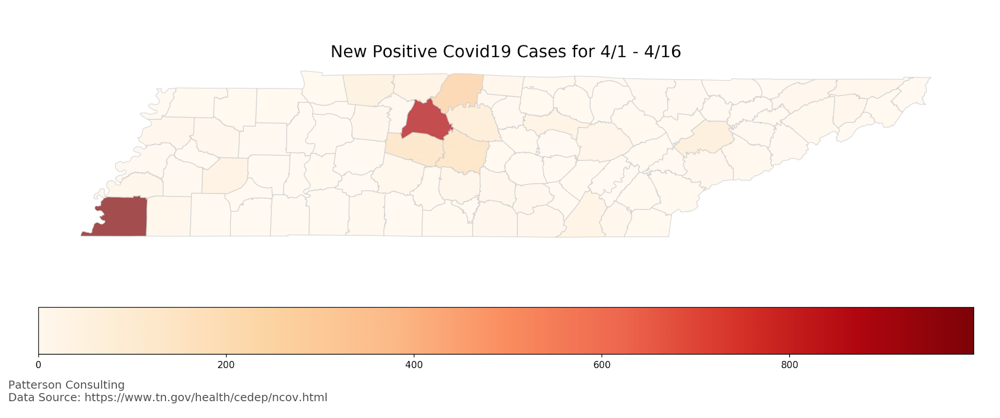

Analyzing Covid-19 Shelter-In-Place Effects for Tennessee and Hamilton County
Author: Josh Patterson
Date: April 16th, 2020
Intro
In this report we examine how Covid-19 infection rates in Hamilton County, TN and then the wider state of Tennessee, were affected by the Shelter-in-Place order issued by the Govenor of Tennessee on April 2nd, 2020.
In our first report on Covid-19 data we forecasted positive counts for Hamilton County across the month of April based on the Tennessee state growth rate. In this report we also look at how that report differs from the actual data reported through April 17th.
Disclaimers
This report was created by Patterson Consulting as an informational analytical exercise. No healthcare bodies nor goverments are endorsing this report.
Patterson Consulting does not employ any epidemiologists, but we do analyze data and provide forecasts for Fortune 100 companies[Other Initiatives].
Assumptions, Approach, and Caveats
Many models have tried to forecast Covid-19 on a per-state level and have had issues with accuracy due to multiple factors such as:
- many aspects of Covid-19 are not yet well understood
- once dire forecasts came out, many people begin to self-isolate, therefore social-distancing was already being implemented inherently. This effect changes the in-flight conditions the original forecasts were made based on.
- as more data came online, models were updated
For this analysis of the Shelter-in-place order from April 2nd in Tennessee, we decided to analyze two windows:
- The first 5 days of the shutdown window
- The last 10 days of the shutdown window
Using CAGR as a Growth Measure
We switched to CAGR in this case as its a simple analytical way to express how a variable is growing over time. It's difficult at this stage to fit a model such a SIR on each county as we don't have a good handle on what the specifics for Covid-19 are, and that makes the SIR curves bounce around a lot. So for now we'll stick with CAGR as it seems to be effective to measure near-term infection growth in observed data. It's worth noting that CAGR does not take into account the longer-term dynamics of an infection curve that you'd normally see in a SIR model. This means that while CAGR is a decent near-term growth modeling tool, there is a point on the horizon at which it does not take into account the SIR models tail-dynamics.
Data Sources
Raw data analyzed is from the daily data being pulled from
- The Covid Tracking Project, TN data archives
- The Tennessee state website for Covid-19 reported statistics
Tennessee Geographical Location of New Covid-19 Positive Tests, April 1st to April 17th
To set context for this report, in map below we visualize the total new covid-19 detections in Tennessee on a per-county level. 
As we can see in the image above, Shelby County (Memphis) and Davidson County (Nashville) are both hot spots for new Covid-19 infections in the state of Tennessee for the month of April through the 17th. The embedded spreadsheet below has the full dataset.
Tennessee Observed Reaction to Shutdown
In the embedded spreadsheet below, we should calculations for the entire state of Tennessee.
In the analysis above we see only a difference of 0.02 between the initial "delay window" of the shelter-in-place order and then "cooldown window" later in the month. However, this masks dyanmics that play out on the county level as we note the map above showing a wide variance of new infections for the month across counties. Let's now look at a few specific counties to get a better idea of what happened.
Hamilton County Observed Reaction to Shutdown
In the embedded spreadsheet below we can see the observed data across the shelter-in-place order for Hamilton County, TN.
We note we're missing 2 days of data in the above model, so we hand calculated approximations based on the CAGR for that part of the shelter-in-place window.
Further we can see the embedded graph below that shows the total cases per day over the time window of April 1st to April 17th.
Analysis of Hamilton County Shutdown Window Data
Analysis of the data and graph above for Hamilton County's shelter-in-place directive:
- There appears to be an inflection point in the graph on 4/7/2020
- Covid patients tend to exhibit symptoms around 5 days after initial infection [reference here]
- Likely we're seeing the lag-effects of patients testing positive across the 5 days into the window
- The daily compounding growth in the lag window comes is calculate to be 0.11
- Post inflection point, we see the daily compounding growth lower to 0.02 over the remainder of the window
(For a replay of the April projection with the observed CAGR of 0.11, check out the footnote section.)
How did the Shelter-in-Place Affect Nashville and Davidson County?
We can see the calculations in the embedded spreadsheet below.
Analysis caveats:
- We're missing more days for Davidson County, because I was not downloading and tracking every county's daily stats before 4/13/2020 (I only had a few spot days).
- However, we can still compute the same CAGR windows as CAGR only needs the start value, the end value, and the count of time periods (days, here)
Davidson County analysis:
If we use the same date windows, we see a similar "tale of two windows"; the difference between the two CAGR windows is nearly the same as Hamilton County (0.14 - 0.05 == 0.09), despite starting and ending with higher numbers.
How did the Shelter-in-Place Affect Smith County?
In this section we analyze a "middle of the pack" Tennessee county to better understand how different types of counties experienced the shelter-in-place order from a covid-19 perspective. For reference, Shelby County, TN, has a population of 19,942 for 2020. We can see the calculations for Shelby County's shelter-in-place analysis in the embedded spreadsheet below.
Shelby County only had 3 at the beginning of the month, and then rose to 11 cases by the end of the month. Less populus rural counties have conditions that are less conducive to infection spreading. This is a potential explanation for the observed data.
Another observation here is that the CAGR numbers for the early / late windows do not show the CAGR slowdown as we saw in both Hamilton County and Davidson County. This could also expain why Tennessee's CAGR windows were more "muted" as a state as compared to specific areas of higher Covid-19 infection.
Summary, Analysis, and Moving Forward
In this report we examined how Covid-19 infection rates in Hamilton County, TN and then the state of Tennessee, were affected by the Shelter-in-Place order issued by the Govenor of Tennessee on April 2nd, 2020.
Based on the above data we suggest that there may be a "tale of two infections" at work in Tennessee.
In the larger more populated 6-8 counties (e.g., Davidson), there are higher infection counts. These counties tend to also be more populated as well. These counties tended to react positively to the 15-day shelter-in-place order based on the slowdown in their infection rate CAGR.
However, many of the other counties in the state of Tennessee are not being impacted by high infection rates and did not see a slowdown in their CAGR. However, because many times their total infection count is so low, it didn't matter.
Footnotes
Footnote: [Other Initiatives]
Other tangentially relevant Patterson Consulting initiatives:
- Analytics work supporting research at the University of Michigan on ICU admissions during disasters
- Smart city analytics support for the University of Tennessee at Chattanooga's CUIP group (see our previous article on analying PM2.5 air quality data)
What would have happened in Hamilton County in April with no shutdown?
Footnote: April Re-ProjectionTo build the forecast below, we use the CAGR observed leading up to shutdown period (0.11). We make the assumption that it is safe to assume we'd hit "at least" this number in April as a mild flu season affects 7.4% of the population. The population of Hamilton County for 2020 is 364,286 and based on the 7.4% flu infection total, that would affect 29,957 people in Hamilton County.
Therefore we feel its reasonable to assume based on observed characteristics of Covid-19 so far that without reduced contact the virus would follow a CAGR of 0.11 and infect around 1000 people in Hamilton County in April.